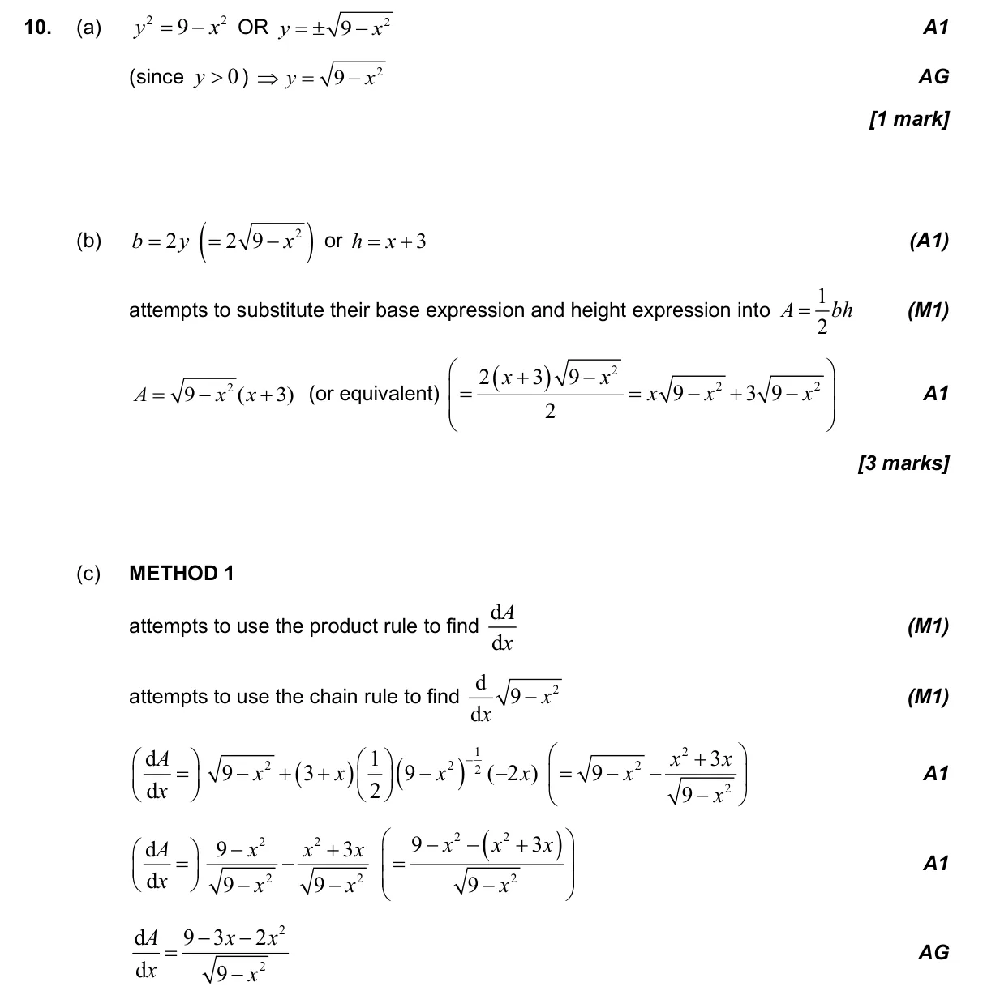
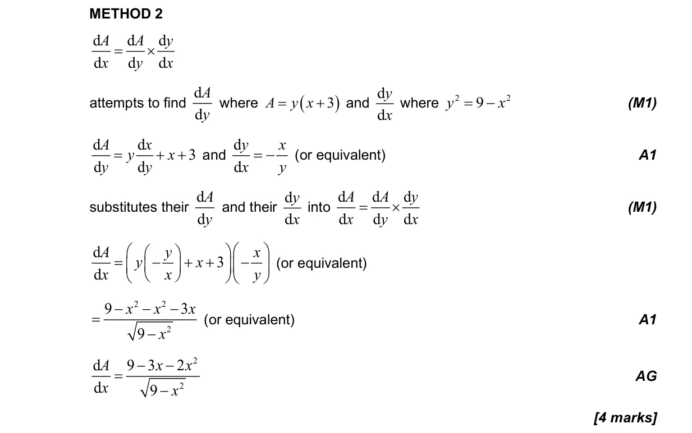
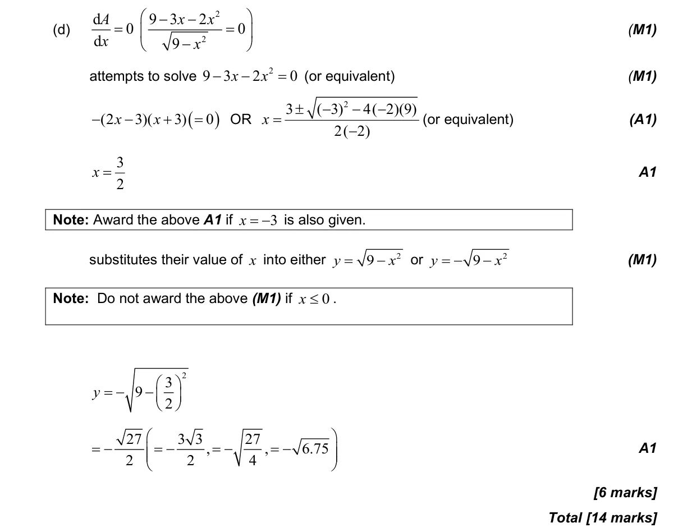

14 marks P1 TZ2 Section B No calculator 5.8 Optimization, local extrema and points of inflexion5.6 Differentiating polynomials n in Q, chain, product and quotient rules2.7 Solutions of quadratic equations and inequalities, discriminant and nature of roots2.2 Functions, notation, domain, range and inverse as reflection Question Hide breakdown abcd Markscheme 